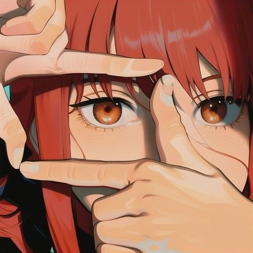

О приложении
SloNick - это уникальное приложение, которое перенесет вас в атмосферу Японии 90-х годов. Погрузитесь в эстетику киберпанка, аниме и ретро-компьютеров.
Особенности приложения:
- Футуристический интерфейс в стиле аниме
- Ретро-звуковые эффекты и анимации
- Полная адаптивность для всех устройств
- Оригинальный саундтрек в стиле синтвейв

Скачать приложение
Скачиваний:
0
SloNick v2.0
Окунитесь в атмосферу Японии 90-х годов с нашим приложением. Доступно для Windows, macOS и Linux.
Системные требования:
OS:
Windows 10/11
Процессор:
Intel Core i3 или аналог
Память:
4 GB RAM
Хранилище:
306 MB свободного места
Команда разработчиков
Скопенков Артём
Ведущий разработчик
Специалист по UI/UX и анимации с 8-летним опытом в разработке интерфейсов в ретро-стиле.

Бейдук Алексей
Технический архитектор
Backend-разработчик и архитектор Electron-приложений с опытом в создании кроссплатформенных решений.
Миторин Александр
UI дизайнер
Дизайнер с страстью к аниме и ретро-эстетике. Создает уникальные интерфейсы, вдохновленные японской культурой.